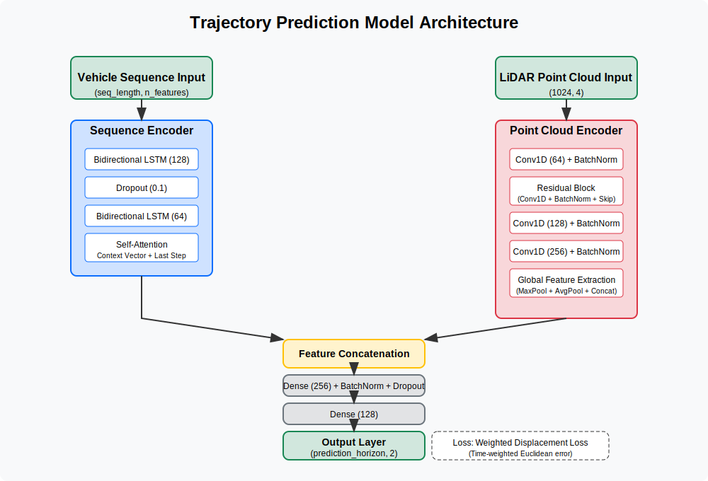

Model API
The Model API provides components for building trajectory prediction models.
Model Architecture
- build_trajectory_prediction_model(seq_length, n_features, n_lidar_features, prediction_horizon)
Build a trajectory prediction model using relative displacements.
- Parameters:
seq_length (int) – Length of input sequence
n_features (int) – Number of features in the sequence input
n_lidar_features (int) – Number of features in LiDAR point cloud
prediction_horizon (int) – Number of future steps to predict
- Returns:
Compiled Keras model
- Return type:
tensorflow.keras.Model
# Example usage model = build_trajectory_prediction_model( seq_length=10, n_features=15, n_lidar_features=4, prediction_horizon=10 ) model.summary()
Model Architecture Diagram
The model consists of two input branches:
Sequence branch for processing vehicle state history
LiDAR branch for processing environmental context
These branches are fused and processed through fully connected layers to predict future trajectories.
{kind=link}
Point Cloud Encoder
- build_point_cloud_encoder(point_cloud_input)
Build an enhanced PointNet-inspired network for point cloud processing.
- Parameters:
point_cloud_input (tensorflow.Tensor) – Input tensor for point cloud data
- Returns:
Encoded point cloud features
- Return type:
tensorflow.Tensor
Architecture Details
Initial point-wise convolution (1x1) to transform features
Residual block for improved gradient flow
Hierarchical feature extraction (64 → 128 → 256 channels)
Global feature pooling with max and average operations
Dense layers for final feature embedding
Sequence Encoder
- build_sequence_encoder(sequence_input)
Build a sequence encoder with attention mechanism.
- Parameters:
sequence_input (tensorflow.Tensor) – Input tensor for sequence data
- Returns:
Encoded sequence features
- Return type:
tensorflow.Tensor
Architecture Details
Bidirectional LSTM layers for temporal feature extraction
Self-attention mechanism to prioritize important time steps
Context vector creation through weighted averaging
Combination of context vector and last step features
Loss Functions
- weighted_displacement_loss(y_true, y_pred)
Custom loss function for displacement prediction with temporal weighting.
- Parameters:
y_true (tensorflow.Tensor) – Ground truth displacements
y_pred (tensorflow.Tensor) – Predicted displacements
- Returns:
Weighted loss value
- Return type:
tensorflow.Tensor
Loss Calculation
Calculate Euclidean distance error at each time step
Apply temporal weights that prioritize earlier predictions
Normalize weights for consistent scaling
Average the weighted errors
Inference Functions
- predict_future_trajectory(model, current_sequence, current_lidar, scaler_input, scaler_target, start_x, start_y, start_heading)
Predict a future trajectory given current state.
- Parameters:
model (tensorflow.keras.Model) – Trained trajectory prediction model
current_sequence (numpy.ndarray) – Normalized sequence of recent vehicle dynamics
current_lidar (numpy.ndarray) – Processed LiDAR point cloud data
scaler_input (sklearn.preprocessing.StandardScaler) – Scaler used for input normalization
scaler_target (sklearn.preprocessing.StandardScaler) – Scaler used for target normalization
start_x (float) – Current vehicle x position
start_y (float) – Current vehicle y position
start_heading (float) – Current vehicle heading in radians
- Returns:
Tuple containing predicted path and steering angles
- Return type:
tuple
# Example usage predicted_path, steering_angles = predict_future_trajectory( model, current_sequence, current_lidar, scaler_input, scaler_target, start_x=10.0, start_y=5.0, start_heading=0.5 )
Model Serialization
The model can be saved and loaded using standard TensorFlow/Keras functions:
# Save model
model.save('trajectory_prediction_model.h5')
# Save preprocessing scalers
import pickle
with open('trajectory_scalers.pkl', 'wb') as f:
pickle.dump({
'input_scaler': scaler_input,
'target_scaler': scaler_target
}, f)
# Load model
from tensorflow import keras
model = keras.models.load_model(
'trajectory_prediction_model.h5',
custom_objects={'weighted_displacement_loss': weighted_displacement_loss}
)
# Load scalers
with open('trajectory_scalers.pkl', 'rb') as f:
scalers = pickle.load(f)
scaler_input = scalers['input_scaler']
scaler_target = scalers['target_scaler']